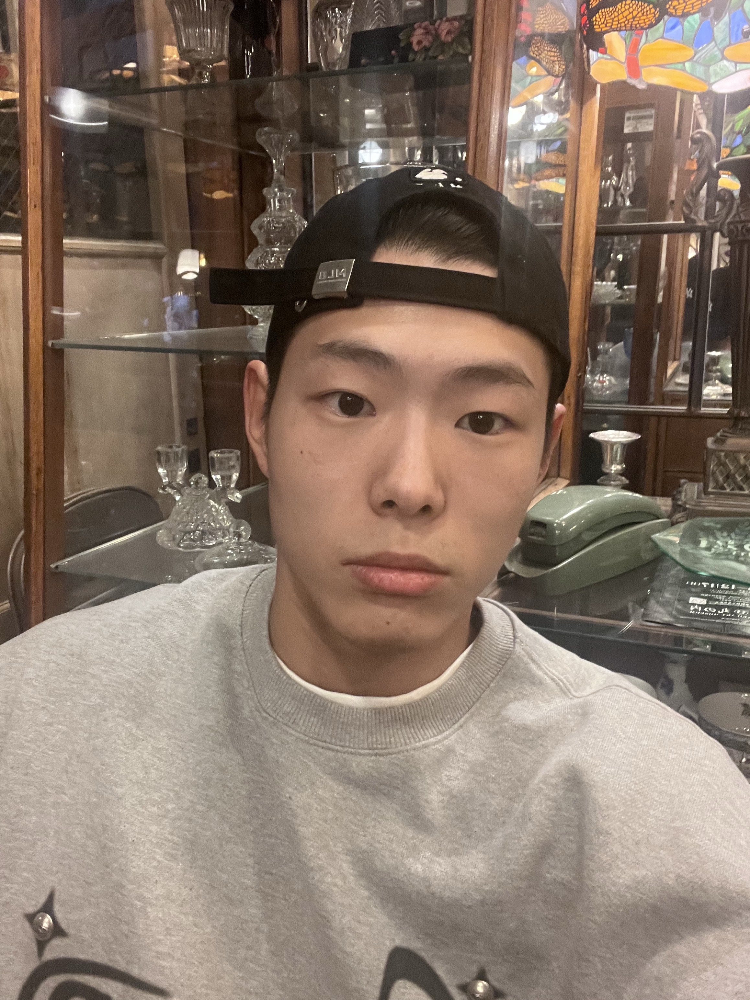

|
Minjae Kim I'm an undergraduate student in Yonsei Mirae university majoring in Computer Sciencs. Currently I'm working as an intern advised by Prof. Seok-Hwan Choi (AISLAB). I'm interested in controlling robots; such as quadrupred robots and robot arm, to solve challenging problems in the real world that are difficult for humans to tackle. My focus is on creating robotic systems that can assist humans in various tasks, enhancing both efficiency and safely. |
 |
{kind=link}
Research IntersetedI'm interested in Motion Planning, Robot Learning. |
Research and ProjectsI'm currently working on a project related to the Planning and Control of Manipulator Robot and Quadruped Robot. |
|
Probabilistic Inference in Autonomous Driving
Minjae Kim This project is about the two different methods for road type identification in autonomous driving. The goal of this project is to classify the road in front of the car using the camera image. To achieve this goal, I used Naive Bayes Classifier and Bayesian Estimation. |
|

|
CROMA : Companion Robot with Object Manipulation and Autonomy (Ongoing)
Minjae Kim This project aims to develop a companion robot for home environments, allowing users to control the robot via voice or text commands to perform various tasks. |